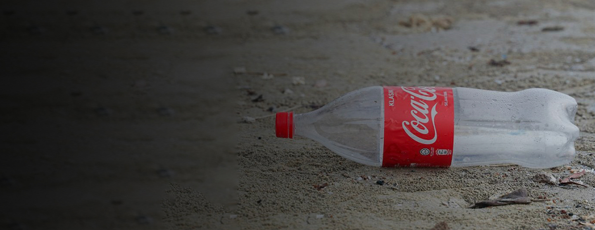

Critiche e
controversie.
I lati nascosti
di Coca-Cola.
Un approfondimento sulle principali critiche rivolte a Coca-Cola, tra impatto ambientale, uso delle risorse e questioni legate alla salute, per comprendere il dibattito globale sulla sostenibilità e responsabilità del brand.
Opinioni contrastanti.
Negli ultimi anni, The Coca-Cola Company è stata al centro di numerose critiche legate sia all’impatto ambientale sia alle conseguenze sulla salute. In particolare, diversi report e articoli giornalistici come quelli di The Guardian hanno evidenziato il ruolo dell’azienda come uno dei principali responsabili dell’inquinamento da plastica a livello globale. Altre inchieste, tra cui quelle del The New York Times e della BBC, hanno sollevato preoccupazioni riguardo allo sfruttamento delle risorse idriche mentre analisi riportate da Reuters hanno sottolineato il contributo alle emissioni di gas serra.
Parallelamente, l’azienda è stata criticata anche dal punto di vista sanitario: diversi studi e articoli tra cui quelli pubblicati da The New York Times hanno messo in evidenza il legame tra il consumo eccessivo di bevande zuccherate e problemi come obesità e diabete di tipo 2, alimentando il dibattito sul ruolo delle grandi multinazionali nel promuovere abitudini poco salutari. Nel complesso, queste critiche hanno contribuito ad aprire un ampio dibattito sul reale impegno di Coca-Cola verso la responsabilità sociale e la sostenibilità.